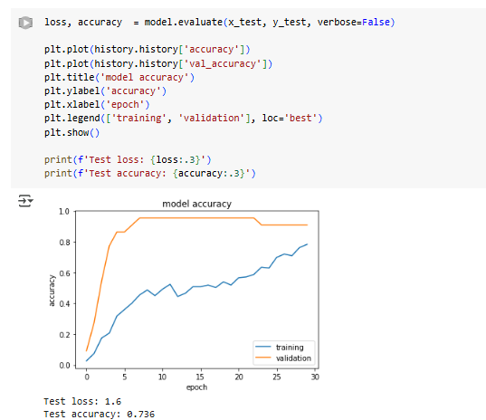
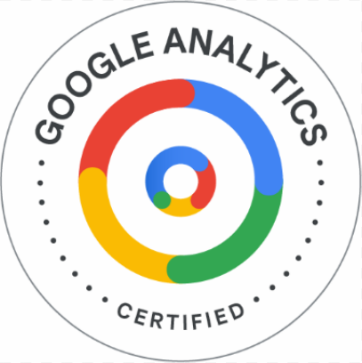

Angela Li
Data Scientist | Developer | Analyst
Data Scientist | Developer | Analyst
I’m Angela Li, a passionate and driven data science student with a strong interest in statistical modeling, machine learning, and digital storytelling. My academic journey has given me a deep foundation in tools like Python, R, Power BI, and Tableau, and I’ve applied those skills in projects ranging from natural language processing to classification and clustering models.
Beyond technical work, I care deeply about how we communicate data. I aim to build solutions that are both insightful and accessible, especially when it comes to interpreting social and behavioral patterns through analytics. In addition to my data science pursuits, I’m also a Twitch Partner, engaging with a vibrant audience through creative and educational content.
My goal is to bridge technical expertise with real-world impact—creating projects that are not only technically sound but also deeply human-centered. I’m always looking for opportunities to learn, collaborate, and contribute meaningfully in tech-driven environments.
As the Data Coordinator for Alpha Omicron Pi (AOII), I support internal chapter operations by managing member data, attendance, and digital communications. I’ve also contributed to planning events and promoting academic excellence through organized record keeping and reporting.
Master of Data Science, University of Calgary (2023 – Present)
BSc in Computer Science, Mount Royal University (2018 – 2022)
GPA: 3.79 | Dean’s List | Minor in Mathematics
Used classification models to predict heart disease using health indicators.
Tools: Python, scikit-learn, pandas
Built an NLP model to classify emotions in text using machine learning techniques. Explored preprocessing, vectorization, and model evaluation.
Tools: Python, scikit-learn, pandas, NLP
Authored a research paper explaining the mathematical foundations and architectural components of neural networks.
Tools: Python, LaTeX, Neural Net Theory
Explored the relationship between academic background and career outcomes.
Tools: R, ggplot2, Power BI
 Microsoft Certified: Azure Data Fundamentals
Microsoft Certified: Azure Data Fundamentals
Microsoft Certified: Azure Data Scientist Associate
Google Analytics Certification
Languages: Python, R, SQL, Java
Tools: Azure, Power BI, Tableau, Databricks
Techniques: Classification, Clustering, Regression, PCA
Outside of data science, I’m also a Twitch Partner where I stream gameplay and connect with my audience through gaming content.